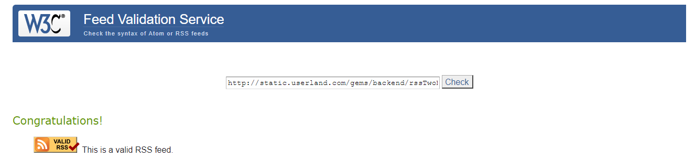
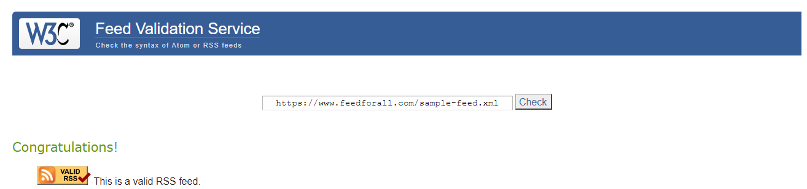
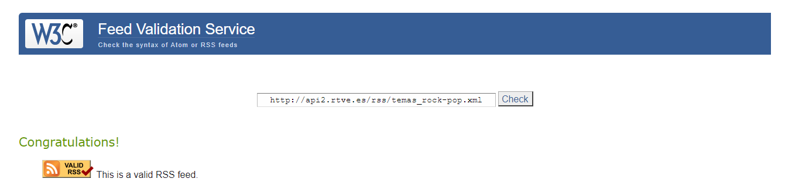
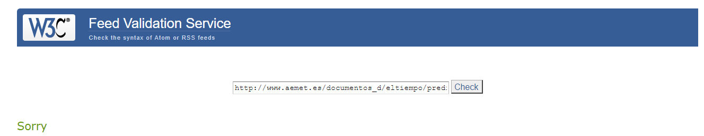

1.-Indica si es válido el feed
Este feed es válido
2.-Subsana los errores/warnings en su caso
Este feed tiene 3 avisos, dos de ellos son por no poner el nombre completo en la dirección de correo, por ejemplo,
3.-Indica channel o equivalente
En este feed el canal es de la página de Userland Software
4.-Indica número de items o equivalentes
Este feed tiene 9 item declarados
1.-Indica si es válido el feed
Este feed es válido
2.-Subsana los errores/warnings en su caso
Este feed tiene seis avisos, dos de ellos son como en el feed anterior, por no poner el nombre completo en la dirección de correo,otro aviso es porque no coincide el título de la imagen con el título del canal para solucionarlo debemos añadir el mismo nombre en ambos. Por otro lado, el siguiente aviso es debido a que el enlace de la imagen no coincide con el enlace del canal. El quinto aviso es porque la etiqueta item debería contener un elemento giud y el último aviso es por el mismo motivo que el último aviso del primer enlace, debido a no declarar la url de atom
3.-Indica channel o equivalente
En este feed el canal es de la página FeedForall
4.-Indica número de items o equivalentes
Este feed tiene 3 item declarados
1.-Indica si es válido el feed
Este feed es válido
2.-Subsana los errores/warnings en su caso
Este feed tiene tres avisos, en el primero nos recomienda que el elemento item contenga un elemento guid, el siguiente aviso es debido a que los atributos de estilos son muy problemáticos con los feed por lo que el mensaje es que el atributo estilos tiene contenido potencialmente inseguro. El último aviso se repite junto con los dos enlace anteriores, falta la declaración de la url de atom
3.-Indica channel o equivalente
En este feed el canal es de la radio de Rock/Pop de rtve
4.-Indica número de items o equivalentes
Este feed tiene 70 item declarados
1.-Indica si es válido el feed
Este feed no es válido
2.-Subsana los errores/warnings en su caso
Este feed tiene cuatro errores, el primero de ellos es por no añadir el atributo href a una url, para solucionarlo debemos añadir el atributo href en el atributo link. El segundo error es debido a que la url está mal formada ya que le falta http://, el tercer error es porque los link no deben tener texto ya que algunos elementos exresan sus datos en texto y otros expresan sus datos en atributos y esto puede crear confusión. El último error se ha repetido en todos los feeds, es debido a que no está declarada la url del atom
3.-Indica channel o equivalente
En este feed el canal es de los avisos de aemet
4.-Indica número de items o equivalentes
Este feed no tiene declarado ningún feed
Estructura principal de un documento RSS
Debemos declarar tanto la versión del XML como la versión del RSS, además de declarar los atributos obligatorios como son el channel, title, link y description, finalmente añadir algún item.
Indica cuántos elementos channel puede haber en un documento RSS
Sólo puede haber un channel en un documento RSS.
Indica los elementos requeridos en channel (son tres)
Los elementos del channel requeridos son el title, link y description
Indica los elementos secundarios en channel (son 15)
Los elementos secundarios son language, copyright, managingEditor, webMaster, pubDate, lastBuildDate, category, generator, docs, cloud, ttl, image, textInput, skipHours, skipDays
Elementos item
Los elementos de item son title, link, description, author, category, comments, enclosure, guid, pubDate, source
Estructura principal de un documento Atom
La estructura principal contiene los atributos
Indica cuántos elementos feed puede haber en un documento Atom
Puede haber sólo un elemento feed en el documento atom
Indica los elementos requeridos en feed
Los elementos obligatorios son el id, title y updated
Indica los elementos recomendados en feed
Los elementos recomendados son author, link
Indica los elementos opcionales en feed
Los atributos opcionales son category, contributor, generator, icon, logo, rights, subtitle
Indica los elementos requeridos en entry
Los elementos obligatorios son el id, title y updated
Indica los elementos recomendados en entry
Los elementos recomendados son author, link, content y summary
Indica los elementos opcionales en entry
Los atributos opcionales son category, contributor, rights, source, published